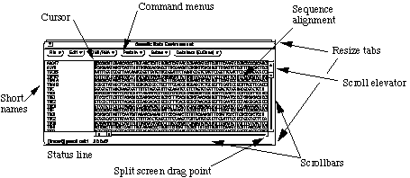
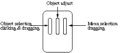
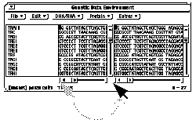

Genetic Data Environment version 2.2
Table of Contents
Introduction
The Genetic Data Environment is part of a growing set of programs for
manipulating and analyzing "genetic" data. It differs in design
from other analysis programs in that it is intended to be an expandable
and customizable system, while still being easy to use.
There are a tremendous number of publicly available programs for sequence
analysis. Many of these programs have found their way into commercial packages
which incorporate them into integrated, easy to use systems. The goal of
the GDE is to minimize the amount of effort required to integrate sequence
analysis functions into a common environment. The GDE takes care of the
user interface issues, and allows the programmer to concentrate on the analysis
itself. Existing programs can be tied into the GDE in a matter of hours
(or minutes) as apposed to days or weeks. Programs may be written in any
language, and still seamlessly be incorporated into the GDE.
These programs are, and will continue to be, available at no charge.
It is the hope that this system will grow in functionality as more and more
people see the benefits of a modular analysis environment. Users are encouraged
to make modifications to the system, and forward all changes and additions
to Steven Smith at smith@bioimage.millipore.com.
What's New for this Release
GDE 2.2 represents a maintainence release. Several small bugs have been
fixed, as well as new editing features and user interface elements. Also,
I have tried to update all of the contributed external programs to their
latest release. Updated programs include: Phylip, Treetool,
LoopTool, Readseq, Blast, and Fasta. Improved
versions of printing, and translate are included as well. As for new editing
features, a useful "yanking" feature has been added by Scott Ferguson
from Exxon Research, and the capability to export the colormap for a seqeunce
(see appendix A and appendix
C). Among the bugs fixed in this release are:
- Selection mask problems when exporting to Genbank (fixed in 2.1)
- Memory leaks (fixed in 2.1)
- Correct handling of circular sequences
- More liberal interpretation of Genbank formatted files. (not column
dependent)
System Requirements
GDE 2.2 currently runs on the Sun family of workstations. This includes
the Sun3 and Sun4 (Sparcstation) systems. It was written in XView, and runs
on Suns using OpenWindows 3.0 or MIT's X Windows. It runs in both monochrome,
and color, and can be run remotely on any system capable of running X Windows
Release 4. You should have at least 15 meg of free disk space available.
The binary release for SparcStations was compiled under SunOS 4.1.2 and
Openwindows 3.0.
We are also supporting a DECStation version of GDE. This is running under
XView 3.0/X11R5. We encourage interested people to port the programs to
their favorite Unix platform. There are informal ports to the SGI line of
unix machines.
Note to Motif users
GDE2.2 can be run using different window managers. The most common alternative
to olwm is the Motif window manager (mwm). The only problem in using another
window manager is that the status line is not displayed. We have added a
"Message panel" as an option under "File->Properties"
which displays all of the information contained on the status line.
People using other window managers may also prefer using xterm, and xedit
as default terminals and file editors. This can be accomplished by replacing
all occurrences of 'shelltool' and 'textedit' with 'xterm -e' and 'xedit'
in the $GDE_HELP_DIR/.GDEmenus file.
Installing the GDE
Instructions for the source code release are included in the README.install
file.
The binary installations consist of creating a GDE directory, such as /usr/local/GDE,
and un-taring the installation tarfile into the directory. If you are installing
the GDE for your own use, then you can simply make a GDE subdirectory. There
is no need to be superuser (root) to do the installation in your own directory.
For example:
- demo% mkdir /usr/local/GDE
- demo% cp GDE2.2.tar /usr/local/GDE
- demo% cd /usr/local/GDE
- demo% tar -xf GDE2.2.tar
After this, each new user will need to add two lines to their .cshrc
file so that they can find the gde programs and files.
- demo% cat >> ~/.cshrc
- set path = ($path /usr/local/GDE/bin)
- setenv GDE_HELP_DIR /usr/local/GDE/help/
- ^D
You may wish to make a copy of the .GDEmenus file from the help directory
into your home directory. This is only necessary if you wish to modify your
menus. Copy the demo files from /usr/local/GDE/demo into your local directory,
and you are now ready to use the GDE.
FastA and Blast need to have the properly formatted databases installed
in the $GDE_HELP_DIR under the directories FASTA/PIR, FASTA/GENBANK, BLAST/pir
BLAST/genbank. For FASTA, simply copy a version of PIR and Genbank into
the proper directory. Alternately, the PIR and GENBANK files can be symbolic
links to copies of Genbank held elsewhere on your system. You may need to
look at the .GDEmenus file in $GDE_HELP_DIR to verify that you are using
the same divisions for these databases.
Blast installation involves converting PIR and GENBANK to a temporary FASTA
format (using pir2fasta and gb2fasta) and then using pressdb for nucleic
acid, and setdb for amino acid to reformat the databases again into blast
format. The .GDEmenus file is currently set up to search with blast using
the following databases: pir, genpept, genupdate, and genbank. If you wish
to divide these into subdivisions, then the .GDEmenus file will have to
be edited.
The most up to date release of blast can be obtained via anonymous ftp to
ncbi.nlm.nih.gov. The most recent
release of FASTA can be obtained via anonymous ftp to uvaarpa.virginia.edu.
It is strongly recommended that you retrieve these copies, and become familiar
with their setup.
Using the GDE
It is assumed that the user is familiar with the Unix, and OpenWindows/Xwindows
environments. It is also assumed that people running standard MIT X-Windows
will be using the OpenLook window manager (olwm). Other window managers
work with varied success. If you are not certain as to how your system is
set up, please contact your systems administrator.
Once the window system has started, and a terminal window (xterm, shelltool
etc.) you can start up the GDE by typing: gde tRNAs. This should
load the sample data set tRNAs into GDE, and the following window should
appear:

This is the sequence alignment editor. It consists of a color alignment
display, a set of command menus, horizontal and vertical scroll bars to
navigate the alignment, a list of short sequence names (usually the LOCUS
of a Genbank entry), and a status line. The cursor is located in the upper
left corner.
- Using the Mouse. The mouse follow OpenLook standards for operation.
The functions for each button are:

The left mouse button is used for placing the cursor, selecting sequences
by their short names, scrolling/paging, performing split screens, and resizing.
The right button is used for pop up menus, and scrollbar menus. The middle
button is used for extending a text selection.
- Cursor Movement. The cursor can be moved using the arrow keys,
or by clicking the mouse within a sequence. The cursors position is displayed
on the status line in both sequence position and alignment column number.
The right hand side of the status line shows the left and right column
positions of the currently active display.
Scrolling is controlled by the scrollbar elevator. By clicking (left mouse
button) on one of the elevator arrows, the screen will scroll one character
in that direction. By dragging the elevator center, the screen can be moved
directly to any location. By clicking directly to one side of the elevator,
the screen will scroll one full screen in that direction. And by clicking
on the scrollbar anchor, the elevator will move to that anchor. Scrollbars
also have menus associated with them giving other scroll options. Use the
right mouse button to activate the menu.
- Selecting Sequences. Sequence selection is necessary before
most functions can be performed. Selecting sequences is accomplished by
clicking or dragging (left button) over the short name associated with
the sequence(s). The name of the sequence should become highlighted on
the release of the mouse button. By holding down the shift key, you can
toggle the selection on or off for any set of sequences. By clicking just
to the right of any sequence short name, you will deselect all of them.
- Selecting Text. Selecting text is accomplished in much the same
way as selecting entire sequences. In the editing window, you can drag
the mouse pointer over a rectangular region the select a block of text.
By using the shift key (or the middle mouse button) you can adjust the
selection to include other sequences, or other columns of text. If groups
are enabled, GDE will automatically select all sequences in a group if
any one sequence in a group is selected (See Sequence Editing).
- Sequence Protection. All sequences can be individually protected
against accidental modification. This is accomplished by selecting the
set of sequences that you are interested in editing, and choosing the "Set
protections" menu item under the File menu. Your choices are:
- Unambiguous modification ..... Changing/adding/deleting regular characters
- Ambiguous changes ..... Changing ambiguous codes ('N', 'X'...)
- Alignment modifications ..... Changing alignment gaps ('-', '~')
- Sequence Editing. Sequences can be edited by simply typing to
insert, and using the delete or backspace key to delete characters. Sequences
must have the proper protections set to allow the type of modifications
that you are attempting. The default protection level only allows modification
to the alignment, but not to the sequences themselves. The Sun function
keys, cut, copy and paste are used to edit selected text. Text selections
work in rectangular (possibly disjointed) regions. You can cut or copy
a block of sequence text, and paste it to a new cursor location using these
three keys.
- Sequence Yanking. Yanking referes to the "pulling"
of a base to fill a gapped position like beads on an abacus. Place the
cursor over a gap character, and type control-k to yank the character from
the left into the current position. Type control-l to pull the character
from the right. Repeat counts are honored ("20 control-l" will
yank 20 characters from the right).
- Repeat Counts. By typing a numeric value before an editing function
you can insert, delete or move a number of characters at a time. The current
repeat count is displayed on the status line, and can be cleared by clicking
the left mouse button in the alignment window. In order to insert twenty
gaps into a sequence, one would type "20-". In order to move
down five sequences, one would type "5Ø". This works with
all sequence types, however the meta (diamond) key must be held down when
the cursor is in a text or mask sequence. This is because numbers are valid
characters in these sequences, and would otherwise be confused with repeat
counts.
- Split Screen. Split screen editing allows the viewing one region
while editing another. This is very useful for aligning "downstream"
regions by editing "upstream". The alignment window can be split
horizontally into two or more windows into the alignment. These windows
scroll independently of each other both horizontally and vertically. The
short names displayed to the left of the alignment correspond to the window
that was last scrolled or edited. Care should be taken in any modifications
done in this mode so that edits are performed on the correct sequence.
To avoid confusion during split screen operations, the vertical scroll
bars may be locked so that all windows scroll together.

In order to split a window into two views, grab (left button) the left
or right anchor (small rectangle) at either end of the horizontal scrollbar
and drag to the middle of the window. This should split the window into
two views. To join two views, place the mouse pointer on the horizontal
scroll bar use the menu (right button). The views are NOT two copies of
the alignment. Changes in one window are reflected in the other. Users
should not be confused by this fact.
- Sequence Grouping. Sequences can be grouped for editing functions.
This is very helpful when trying to adjust several sub alignments. When
grouped, all sequences within a group will be affected by editing in any
member of the group. All sequences within a group must have protections
set to allow modification before any one will be modified. In order to
group sequences, select the names of the sequences that should fall within
a group, and select Group under the Edit menu. A number will be placed
at the left of the sequence representing its assigned group number. To
any sequence or sequences, the user selects those sequences and uses the
Ungroup command under the Edit menu.
- Special keys. There are also a few special function keys used
in the GDE. Some functions have meta key equivalences so that they can
be called from the keyboard, instead of by the menu system. The "meta"
key is a standard property of X windows, and may be remapped to a different
key symbol for different keyboards. For example, meta on Sun workstations
is represented with a ¦, where on a Macintosh running MacX it might
be the "apple" key. The operation of the key is the same as the
control or shift key, it is held down while pressing the second key in
the sequence.
Cut text, copy text and paste text are mapped to the Openlook equivalent
keys (L10, L6, and L8 on Sun keyboards). Other meta keys are defined in
the .GDEmenus file, and may be changed to suit your preferences.
Data Types
The GDE supports several data types. The data types supported in 2.2
are DNA, RNA, protein (single letter codes), mask sequence, and text.
- DNA and RNA. Nucleic acid sequences are tightly type cast, and
can contain any IUPAC code (ACGTUM RSVWYHKDBN) as well as two alignment
gap characters ('~' and '-'). Some keys are remapped to fit IUPAC codes.
For example, 'X' is mapped to 'N'. All nonstandard characters get mapped
to the alignment gap '-'. Upper and lower case are both supported, and
the T/U characters are mapped based on whether you are working with DNA
or RNA. The color coding for DNA and RNA is identical. The color for ambiguous
characters, and for alignment gaps is grey.
- Amino Acid Sequence. Amino acid sequences are loosely type cast,
and can contain any valid ASCII character. The results of analysis on nonstandard
characters is not guaranteed. The color for nonstandard amino acid characters,
and for alignment gaps is grey.
- Text Sequence. Any valid ASCII printable character can be entered
into a text sequence. Care should be taken with using space characters,
as these will only be saved properly in Genbank format, and not in flat
file format. The characters @#% and " should be avoided as well, as
these can confuse the reading of flat files if saved in that format.
- Mask Sequence. Mask sequence is identical to text sequence with
the following exceptions. Mask sequence can have the ability (function
dependent) of masking out positions in an alignment for analysis. If a
mask sequence is selected along with some other sequence(s) for an analysis
function that permits masking, then all columns that contain a '0' in the
mask sequence will be ignored by the function. The mask itself would not
be passed to the analysis function either. Some functions allow masking,
some do not. Refer to the instruction page for each function to see whether
or not it supports sequence masking.
- Color Masks. Color masks give color to a sequence on a position
by position basis. Individual sequences can have color masks attached to
them, or one color mask can be used for an entire alignment. Color masks
are generated externally by some analysis functions, and are then passed
back to the GDE. The file format for a colormask is described in Appendix A.
Menu Functions
- File menu. The GDE has several built-in
menu functions under the File and Edit menus. These functions are unique
in that they are part of the primary display editor, and are not described
in the .GDEmenus file.
- Open... Selecting this will bring up the open file dialog box.
Users can scroll through a list of files in the current directory, move
up and down the directory tree, and open any individual data file. The
sequence data in that file is loaded into the current editing window below
any existing sequences. The open command will open any Genbank formatted
file, or a GDE flat file.
- Save as... This function will save the entire alignment to a
specified file in either Genbank or flat file format. The file will be
saved in the local directory unless a relative or absolute path is specified.
- Properties... Properties controls the display settings. Those
settings include character size, color type, and insert direction. The
screen can also be inverted, vertical scroll lock and keyboard clicks (tactile
feedback) can be turned on or off. Vertical scrollbar lock will cause all
split views to scroll together in the vertical direction.

- Protections... This will display, and then set the default protections
for all selected sequences. If two or more of the sequences differ in their
current protection settings, a warning message will appear in the protection
dialog box. The protections currently available are alignment gap protection,
ambiguous character protection, unambiguous character protection, and translation
protection.

- Get info... This option allows the viewing and setting of attributes
associated with each individual sequence. These attributes include short
name, full name, description, author, comments, and the sequence type.
The attributes loosely correspond to fields in a Genbank entry. Comments
can be included for each sequence in the comments field.

- Edit menu
- Select All. Selects all sequences. This is helpful when you
have several dozen sequences.
- Select by name ... Select all sequences containing a given string
in their short names field. No wild cards are allowed, and only selecting
is allowed, not de-selecting. The search is started when the Return key
is pressed, and multiple searches can be accumulated. Press Done when finished.
- Cut/Copy/Paste sequences. Cut copy and paste are primarily useful
for reordering sequences, and for making duplicate copies of a given sequence.
They do not pass information to other programs. This capability will be
implemented in a later release. Cut and copy will place the selected sequences
on an internal clipboard. They can then be pasted back into the top of
editing window (default) or under the last selected sequence.
- Group/Ungroup. Assign a group number to the selected sequences.
Edit operations in any one sequence within the group will be propagated
to all within the group. Sequence protections from one group are also imposed
upon all other sequence in the given group. If a given operation is illegal
in one sequence in a group (i.e. alignment modification) then it will not
work in any of the sequences in that group. Ungroup will remove the selected
sequences from a given group.
- Compress. Compress will remove gap characters from the selected
sequences. The user has the option of removing all gaps, or simply all
columns containing nothing but gaps. This is useful for minimizing the
length of a subalignment.
- Reverse Sequence. Reverses the selected sequences. Alignment
gaps are reversed as well. The selected sequences will remain aligned after
reversal.
- DNA/RNA menu
- Complement Sequence. Converts DNA/RNA into its complement strand
(keeping full IUPAC ambiguity). This function has no effect on text, protein,
or mask sequence. Note that this function does not produce the reverse
strand of DNA but merely converts A<->T and G<->C. If the reverse
strand is needed, remember to Complement and Reverse the sequence (Edit
menu).
External Functions
See appendix C for a full description of functions supported in GDE 2.2
All external functions are described in the configuration file .GDEmenus.
Here is a brief description of some of the basic functions included.
- File menu
- New Sequence (meta n). Create a new sequence. Prompts for sequence
type, and short name.
- Import foreign format/Export foreign format. Load and save sequences
using Readseq by Don Gilbert (see Appendix C).
- Save Selection. Save the currently selected sequences in a specified
file.
- Pretty print. Print using the sequence formatter supplied by
Readseq.
- Print Selection. Print the selected sequences to the chosen
printer. This function supports the Unix command enscript as well as lpr.
The .GDEmenus file may need to be modified to add the names of local printers
to the printer list.
- Edit menu.
- Sort... Sort the selected sequences by a primary and secondary
key. Pass the new order to a new GDE window.
- Extract. Extract the selected sequences into a new window.
- DNA/RNA Menu.
- Translate. Translate the selected sequences from DNA/RNA to
Amino acid. The user can specify the desired reading frame, and the minimum
open reading frame (stop codon to stop codon) to translate. The user can
also choose between single letter code and triple letter codes. There is
also an option to allow each ORF to be entered as a seperate sequence.
- Dot plot. Display a dotplot identity matrix for the selected
sequence(s). If only one sequence is selected, then the dotplot is a self
comparison. If two or more sequences are selected, then the first two sequences
are compared.
- Clustal Align. Align the selected sequences using the clustalv
algorithm by Des Higgins.(See Appendix C)
- Find All (meta f). Search and highlight the selected sequences
for a given substring. A specified percent of mismatching can also be allowed.
- Variable Positions. The selected sequences are scored column
by column for conservation. The result is returned as a grey scale alignment
color mask. This can be useful in selecting PCR primers.
- Sequence Consensus. Return the consensus for the selected sequences.
This can either be a majority consensus, or an ambiguity consensus using
IUPAC coding.
- Distance Matrix. Calculate a distance matrix for the selected
sequences.(See Appendix C)
- MFOLD. Fold the selected sequences using MFOLD by Michael Zuker.
The resulting structure is returned as a nested bracket ('[]') representation
of the secondary structure.(See Appendix C)
- Draw Secondary Structure. Draw the selected sequence using the
proposed secondary structure. Both the secondary structure prediction,
and the RNA sequence should be selected before calling this function. The
drawing program is LoopTool.(See Appendix C)
- Highlight Helix. Show all violations to a proposed RNA secondary
structure. The secondary structure represented must be selected, as well
as the aligned sequences to be tested. The selected sequences will then
be colored according to whether or not they support the proposed 2°
structure. Standard Watson/Crick paring will be colored dark blue, G-U
paring will be colored light blue, mismatches will be colored gold, and
pairng to gaps will be red.
- Blastn/BlastX. Search the selected sequence (select only one)
against a given database with the BLAST searching tool written by Altschul,
Gish, Miller, Myers, and Lipman. Blastn searches DNA against DNA databases,
blastx searches DNA against AA databases by translating the sequence in
all six reading frames.(See Appendix C)
- FastA. Search the selected sequence (select only one) against
a given database using the FASTA similarity search program written by Pearson
and Lipman.(See Appendix C)
- Protein Menu.
- Clustal Align. Align the selected amino acid sequences using
the clustal algorithm. (See Appendix C)
- Blastp, Tblastn, Blast3. Search the selected sequence (select
only one) against a given database with the BLAST searching tool written
by Altschul, Gish, Miller, Myers, and Lipman. Blastp searches AA against
AA databases, tblastn searches AA against DNA databases by translating
the database in all six reading frames. Blast3 finds three way alignments
that are could not be found with only pairwise comparisons.(See
Appendix C)
- Sequence Management Menu.
- Assemble contigs. Assemble the selected sequences into contigs
using the program CAP (Contig Assemble Program) written by Xiaoqiu Huang.
The resulting sequences are returned to the current GDE window, and they
are grouped into contigs. The user can then sort the sequences by group,
and offset to produce an ordered list of the contigs.(See
Appendix C)
- Strategy view. Pass out the selected sequences to StratView.
This program will display contigs in a greatly reduced line drawing. This
is very useful for large contigs.
- Restriction sites. Search the selected sequences for the restriction
enzymes specified in the given enzyme file. The restriction sites are then
colored by enzyme.
- Phylogeny menu.
- DeSoete Tree fit. Calculate a phylogenetic tree using a least
squares fitting algorithm on a distance matrix calculated from the selected
sequences. The results can then be passed on to treetool for display and
manipulation.(See Appendix C)
- Phylip 3.5.Pass the selected data to on of the treeing programs
in Phylip, written by Joe Felsenstein. The chosen phylip program is started
in it's own window, with the selected sequences already loaded.(See Appendix C)
Citation of work
We ask that any published work using any of the external functions in
GDE cite the appropriate authors. Please see Appendix
C for references.
Acknowledgments
I would like to thank the following people for their input and assistance
and code used in the development of the GDE: Carl Woese, Gary Olsen and
Mike Maciukenas at University of Illinois Dept of Microbiology, Ross Overbeek
at Argonne National Laboratories,Walter Gilbert, Patrick Gillevet, Chunwei
Wang, Susan Russo and Erik Bunce at the Harvard Genome Laboratory. I would
also like to personally thank the following people for their permission
to include their software with this release of GDE.
- Tim Littlejohn
- Scott Ferguson
- Brian Fristensky
- Des Higgins
- David Lipman and the group at NCBI
- William Pearson
- Don Gilbert
- Xiaoqui Huang
- Joe Felsenstein
- Michael Zuker
- Geert DeSoete
Many thanks to all the people who have directly and indirectly helped
with the ongoing support of GDE. It is only by the generosity of these people
that GDE has been successful.
Copyright Notice
The Genetic Data Environment (GDE) software and documentation are not
in the public domain. Portions of this code are owned and copyrighted by
the The Board of Trustees of the University of Illinois and by Steven Smith.
External functions used by GDE are the proporty of, their respective authors.
This release of the GDE program and documentation may not be sold, or incorporated
into a commercial product, in whole or in part without the expressed written
consent of the University of Illinois and of its author, Steven Smith.
All interested parties may redistribute the GDE as long as all copies are
accompanied by this documentation, and all copyright notices remain intact.
Parties interested in redistribution must do so on a non-profit basis, charging
only for cost of media. Modifications to the GDE core editor should be forwarded
to the author Steven Smith. External programs used by the GDE are copyright
by, and are the property of their respective authors unless otherwise stated.
While all attempts have been made to insure the integrity of these programs:
Disclaimer
THE UNIVERSITY OF ILLINOIS, HARVARD UNIVERSITY AND THE AUTHOR, STEVEN
SMITH GIVE NO WARRANTIES, EXPRESSED OR IMPLIED FOR THE SOFTWARE AND DOCUMENTATION
PROVIDED, INCLUDING, BUT NOT LIMITED TO WARRANTY OF MERCHANTABILITY AND
WARRANTY OF FITNESS FOR A PARTICULAR PURPOSE. User understands the software
is a research tool for which no warranties as to capabilities or accuracy
are made, and user accepts the software "as is." User assumes
the entire risk as to the results and performance of the software and documentation.
The above parties cannot be held liable for any direct, indirect, consequential
or incidental damages with respect to any claim by user or any third party
on account of, or arising from the use of software and associated materials.
This disclaimer covers both the GDE core editor and all external programs
used by the GDE.